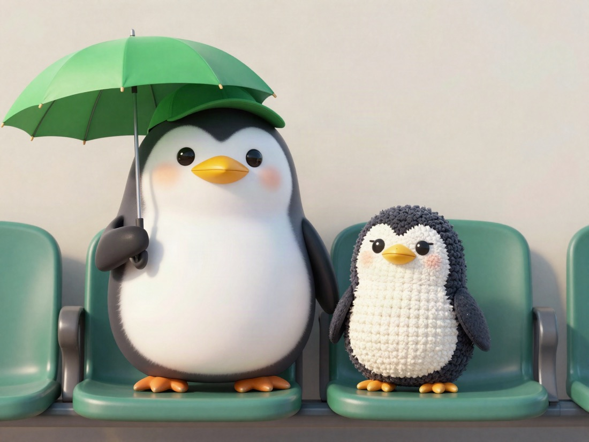

🐧 EVERYDAY LIFE⚡ 11 SEC
I like the gap between Tsubakuro's cute look and old-man personality
About Tsubakuro, the Tokyo Yakult Swallows mascot

⚾My Team
My favorite baseball team is the Tokyo Yakult Swallows.
🐧My Mascot
I especially like the team mascot, Tsubakuro.
🐧
ON THE OUTSIDE
very cute
📰
ON THE INSIDE
quite an old man
👀The Gap
He looks very cute, but inside he is quite an old man. I really like that gap.
🔄 0/6
PREVIOUS POST
Knowledge Metabo #1: I Knew More. I Moved Less.